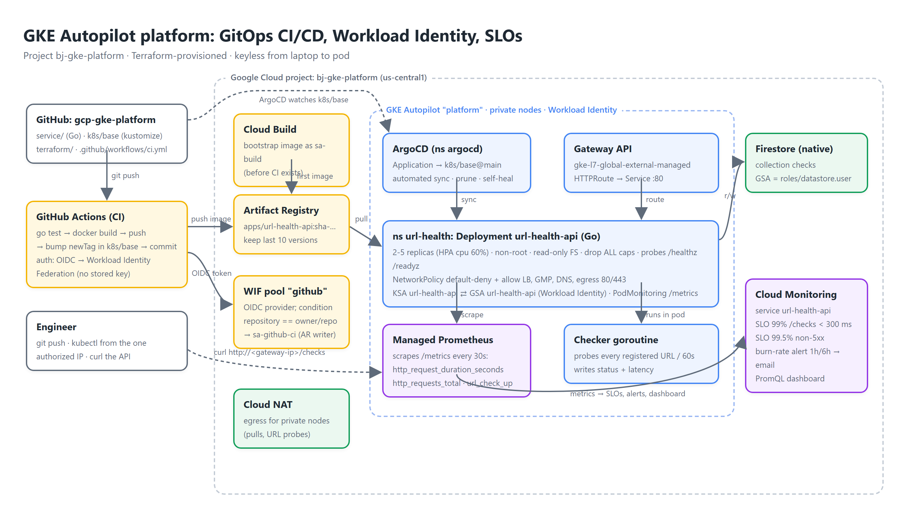

Google Cloud portfolio · Project 2 of 3
A Go microservice on a private GKE Autopilot cluster. Terraform builds the platform; GitHub Actions builds images with a federated identity; ArgoCD pulls manifests from git; Managed Prometheus feeds two SLOs and a burn-rate alert. From laptop to pod, nothing holds a key.
Narrated walkthrough: API through the load balancer → identity chain → a real git push → GitHub Actions → ArgoCD sync → rollout → SLOs → security checklist.
Transcript: demo/transcript.md · Captions: demo/captions.srt. The push in the video is a real commit; the pipeline it triggers is the one in this repository.
Three planes: delivery (GitHub → Actions → Artifact Registry → ArgoCD), runtime (Autopilot, Gateway, Firestore) and observability (Managed Prometheus → Cloud Monitoring).

Regional, REGULAR channel, private nodes behind Cloud NAT, control plane reachable from one authorized CIDR, Workload Identity and Gateway API enabled. Billed per pod request.
CI tests, builds and pushes sha-<commit>, then commits the tag into k8s/base/kustomization.yaml. ArgoCD applies it with automated sync, prune and self-heal.
The pod's Kubernetes service account maps to a Google service account that only has roles/datastore.user. No key, no secret, no sidecar.
PodMonitoring scrapes /metrics; a custom Cloud Monitoring service carries a latency SLO, an availability SLO, a multi-window burn-rate alert and a PromQL dashboard.
A push to service/ on main ends as a rolled-out deployment without anyone running kubectl.
[skip ci] and touches only k8s/, which is outside the workflow's path filter, so CI cannot loop. Rollback is git revert of the bump.Two federations: GitHub → GCP for CI, Kubernetes → GCP for the pod.
| Principal | Becomes | Allowed to | Bound by |
|---|---|---|---|
GitHub Actions job (OIDC token, repository=bhavishyajain545/gcp-gke-platform) | sa-github-ci@… | roles/artifactregistry.writer | WIF pool github, provider github-oidc, attribute condition on the repository, roles/iam.workloadIdentityUser for principalSet://…/attribute.repository/… |
Pod with KSA url-health/url-health-api | url-health-api@… | roles/datastore.user | KSA annotation iam.gke.io/gcp-service-account + roles/iam.workloadIdentityUser for serviceAccount:PROJECT.svc.id.goog[url-health/url-health-api] |
| Autopilot nodes (Compute default SA) | itself | roles/artifactregistry.reader on the apps repository only | Repository-level IAM; the org policy disables automatic grants for default SAs, so this is the only role it has. |
Bootstrap build (gcloud builds submit) | sa-build@… | AR writer, log writer, source bucket reader | Explicit serviceAccount: in cloudbuild.yaml, CLOUD_LOGGING_ONLY |
url-health-api: small enough to read in ten minutes, instrumented enough to run an SLO on.
| Endpoint | Behaviour |
|---|---|
POST /checks | Registers an absolute http(s) URL; 400 on anything else; 201 with the stored check. |
GET /checks | All checks with status (pending|up|down), HTTP status, latency and last probe time, oldest first. |
GET /readyz | 503 until the checker's first sweep completes and whenever it has not swept in 3 intervals; this takes a wedged worker out of rotation. |
GET /metrics | http_request_duration_seconds, http_requests_total (route/method/code), url_check_up, url_check_latency_seconds, url_checks_total. |
MemoryStore for tests and local runs, FirestoreStore on GKE; the handlers never know which.distroless/static:nonroot, 8 MB.Defined in Terraform on Managed Prometheus metrics, with the SRE-workbook burn-rate thresholds.
99% of /checks requests under 300 ms over a rolling 28 days. SLI: distribution cut on prometheus.googleapis.com/http_request_duration_seconds/histogram, route=/checks.
99.5% of /checks requests not 5xx over 28 days. SLI: good/total on http_requests_total with code!~"5..".
Fires when the 1 h burn rate exceeds 14.4× or the 6 h rate exceeds 6×: that is 2% of the monthly budget gone in an hour, or 5% in six. Email notification channel; the policy text links the runbook steps (HPA throttling, Firestore latency, recent deploys).
PromQL widgets: p99 latency, requests/s by status code, URL up/down, probe latency p95 per URL.
| Control | Where |
|---|---|
| Private nodes, Cloud NAT egress, control plane limited to one CIDR, no public node IPs | terraform/gke.tf, vpc.tf |
| Workload Identity for the app, Workload Identity Federation for CI, dedicated bootstrap build SA, zero service-account keys | terraform/iam.tf, .github/workflows/ci.yml, cloudbuild.yaml |
Pod: runAsNonRoot, uid 65532, readOnlyRootFilesystem, allowPrivilegeEscalation: false, capabilities: drop [ALL], seccomp RuntimeDefault, CPU/memory limits | k8s/base/deployment.yaml |
NetworkPolicy default-deny; ingress only from Google front ends (130.211.0.0/22, 35.191.0.0/16) and gmp-system; egress only DNS and public 80/443 | k8s/base/networkpolicy.yaml |
| Distroless static image, pinned modules, registry retention of 10 versions | service/Dockerfile, terraform/registry.tf |
Load balancer health check pinned to /healthz | k8s/base/healthcheckpolicy.yaml |
About 15 minutes; the cluster takes most of it.
cp terraform/terraform.tfvars.example terraform/terraform.tfvars: project id, your public IP as authorized_cidr, alert email, GitHub repo../deploy.sh runs Terraform, builds the first image with Cloud Build, installs ArgoCD with Helm and applies the Application. Use ./deploy.sh --direct to skip ArgoCD and kubectl apply -k k8s/base.GCP_WORKLOAD_IDENTITY_PROVIDER (Terraform output workload_identity_provider) as a repository secret. That is the only secret the pipeline needs.terraform apply a second time after the API has served traffic: request-based SLOs can only be created once the Prometheus series exist in Cloud Monitoring.service/, push to main, watch Actions → the tag-bump commit → ArgoCD → kubectl -n url-health rollout status deploy/url-health-api → curl http://<gateway-ip>/version.terraform -chdir=terraform destroy.Autopilot nodes pull images as the Compute default SA. With iam.automaticIamGrantsForDefaultServiceAccounts enforced it has no roles, so pulls failed with 403 until Terraform granted artifactregistry.reader on the one repository.
Allowing DNS only to the kube-system namespace was not enough: Autopilot resolves through a node-local cache. The first Firestore call hung on DNS and the readiness probe never passed. Egress on port 53 to any destination fixed it.
Gateway backends were "no healthy upstream" because the API returns 404 on /. A HealthCheckPolicy pointing at /healthz made them healthy in two minutes.
Cloud Monitoring validates request-based SLIs against metric descriptors. The first terraform apply fails for the SLOs until the app has been scraped and served the route; the second apply succeeds.
Tying /readyz to the checker's last sweep caught the DNS problem immediately; a trivial 200 would have hidden it.
The tag-bump commit is marked [skip ci] and the workflow only triggers on service/**, so the deployment commit never rebuilds the image.